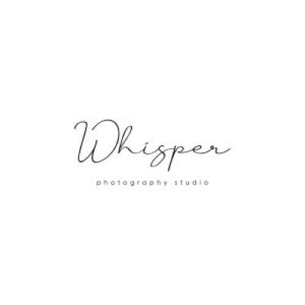
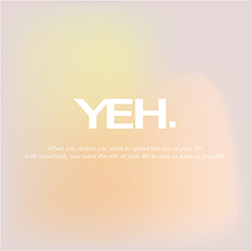

攝
影作品
P
ORTFOLIO
YY美學
拍照不受侷限什麼風格！拍出愛與溫度是我攝影的初衷

悄無 Qiaowu 攝影
善於唯美的人像拍攝手法，拍攝屬於你們自然 互動的情感。

IAN 伊恩
擅長極簡風格 | 雜誌感拍攝

Whisper-JR
拍攝妳的韓式婚紗

LW Photography 老崴攝影
魯士攝影團隊｜客製攝影服務│擅長紀錄婚 禮、自然流露的情感

Alvin Studio
擅長婚禮拍攝｜婚紗拍攝｜人物寫真｜全家福
森沐攝影工作室
自主婚紗｜商業拍攝｜人物寫真｜婚禮紀錄｜ 證件照｜海內外婚錄｜SDE快剪快播

葉子
擅長商業拍攝、個人寫真、動態影像、婚紗包 套方案、個人寫真方案

Tang Photographer
擅長婚紗攝影、婚禮攝影、活動紀錄、孕婦寫 真

Le Bonheur
擅長情感自然風格與電影感
A.M
擅長風格婚紗、人像攝影、婚禮紀錄

SJ Wedding
用不設限的多變視角，紀錄最美的樣子
小花布朗森
婚禮攝影、婚紗、親子寫真、私奔寫真

Peter Lin 攝影工作室
把稍縱即逝的美好，寫成一張張有溫度的相片 婚禮、婚紗、孕期、家庭寫真
影像說書人工作室
擅長自然拍攝互動及個人故事風格拍攝。